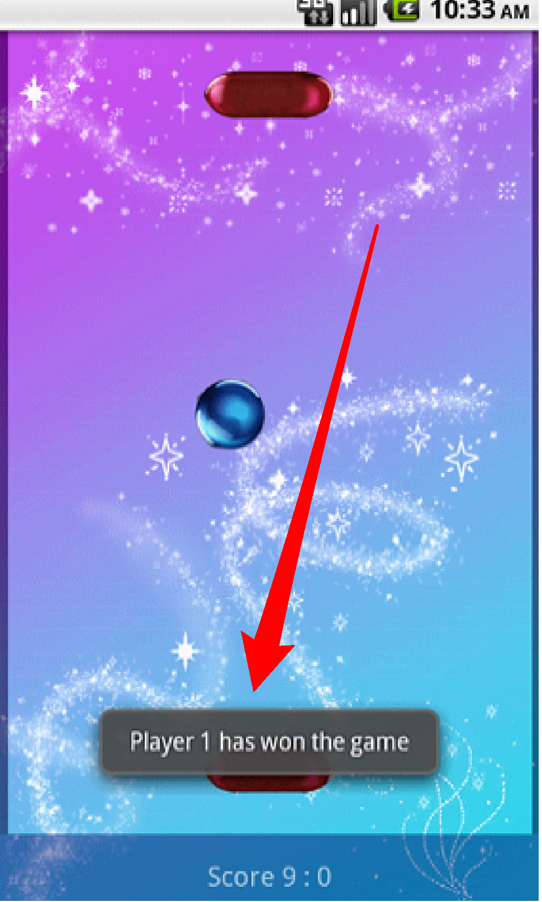

Android API Deep Dive
Advanced Titanium Mobile Development
Agenda
- Platform characteristics
- Android vocabulary
- Android Specific Configuration Options
- Android Specific UI APIs
- Android Specific Non-visual APIs
- Lab
Android Platform Strengths
Open nature (Hackable)
Variety of app distribution methods
Low cost handsets on a variety of hardware
Java-based environment (common skill set)
Many great Google apps
Ti Android Platform Strengths
Lots of support for OS specific functionality, focus on 'best of breed' experience
Easy deployment to devices for testing
Easy to distribute apps for testing
Easy to deploy apps to market
Android Platform Weaknesses
Open nature (Hackable)
Large distribution of device screen types, hardware capabilities, OS versions...
Less active app economy (fewer purchases)
Confusing UX (Linux on a handset!)
- Carrier themes add a layer of complexity in UI design (button backgrounds or default text vary by carrier themes, for example)
- UX is perhaps more confusing for novices, general public than for typical developer or tech geek
Ti Android Platform Weaknesses
API Parity - Platform diversity can make adding features slower
Not as many built-in UI components (platform weakness really)
JavaScript engine performance - V8 is fast!(but Rhino not so much)
- API parity issues is basically a growing-pains result, we're doing our best to catch up and achieve parity
- SDK 1.8 added V8 JS engine, which is much faster than Rhino
- Rhino also supported for pre-Android 2.2 devices
Many devices & form factors - test!
Need to test as widely as possible
Test on device
Android Application Key Components
- Activities
- Services
- Broadcast Receivers
- Intents
It is necessary to understand and implement these in Ti to provide a native experience
http://developer.android.com/guide/topics/fundamentals.html
- Every app has at least one activity and might implement the other components listed here.
- READ THE ANDROID APP FUNDAMENTALS! Don't cheat and hope Titanium will understand all of Aandroid for you!
Android Vocabulary
Activity
'An activity is a single, focused thing that the user can do. Almost all activities interact with the user, so the Activity class takes care of creating a window for you in which you can place your UI'
http://developer.android.com/reference/android/app/Activity.html
Android Vocabulary
Service
'A Service is an application component representing either an application's desire to perform a longer-running operation while not interacting with the user or to supply functionality for other applications to use.'
http://developer.android.com/reference/android/app/Service.html
- Play music in the background
- Check a network source periodically
- Listen for data from a local or remote resource
Android Vocabulary
Broadcast Receiver
'A broadcast receiver is a component that responds to system-wide broadcast announcements'
http://developer.android.com/reference/android/content/BroadcastReceiver.html
- System broadcasts: screen is on/off, battery is low, picture was captured
- Your app could initiate a broadcast (when data is available to be used by other apps) or react to broadcasts
- Broadcasts don't interact with the user (no UI) except via a notification in the Notification Bar
Android Vocabulary
Intent
'Three of the core components of an application - activities, services, and broadcast receivers - are activated through messages, called intents.'
http://developer.android.com/guide/topics/intents/intents-filters.html
- Intents are basically message objects that hold data which pass from one activity to a service, or one activity to another activity, etc.
- Broadcasts are communicated in the form of events
- For security reasons, your app can't directly start an activity in another app. Instead, you send an intent requesting that activity and the OS starts the activity on your app's behalf
- You can request service from another activity directly (call on it) or you can publish an intent and a 'filter' describing the type of service you need and let the OS find appropriate activities for you (think of how the Share button works — your app is publishing some text and the OS is returning all the activities that could share that text: email, twitter, etc.
All of these work in Ti
Android Configuration
Most of the core OS services are configured in AndroidManifest.xml
AndroidManifest.xml properties can be configured in tiapp.xml
You can also have a custom AndroidManifest.xml
Demo: tiapp.xml config and custom AndroidManifest.xml
- Activities, services, & content providers not defined in the manifest are not visible to the OS and therefore cannot be started
- Titanium adds these elements, but you could also define or configure them yourself
- Also use the manifest to define hardware needs (orientation, screen size & density, platform version)
- Show kitchen sink tiapp.xml — activity & services configurations
- Via finder, open KS/build/android/AndroidManifest.xml
describes the capabilities of your activities so the OS knows what type of intents they could respond to - Explain how you could create a custom manifest (covered in Orientation module)
Android UI APIs
Windows
Title bar is only present under specific conditions - depends on how you open the window
Windows are generally associated with an Android activity (though not always)
Not quite as nimble as iOS windows in terms of animation
docs.appcelerator.com/titanium/2.0/index.html#!/guide/Android_Platform_Overview
You can have a lightweight window that isn't exactly equivalent to an Activity, more like a full-screen view
To force a Ti window to be a heavyweight window (an activity), set navBarHidden=true or set fullscreen=true or false and see the URL here for a couple of extra ways
Hardware Menu
Menu of options displayed when hardware button is pressed
Associated with an activity (a Titanium Window)
TabGroup has N activities, and can have N menus
Can configure text and icons
Demo: Menu creation options
Android Labels
Much more capable than iOS Labels
Styling properties on creation same cross platform
Android can display inline HTML (basic formatting tags)
Android can display links inline (web, tel, maps)
Demo: Label gymnastics
iOS supports similar auto-linking on text areas
Toast Notifications

Simple text display over all activities
Can control positioning on screen
Rendering will be different based on OS version and skin
Demo: Notification
And see notification.js
The offsetX and offSetY coordinates are relative to the default location for the notification
and corresponds to the center point of the notification bubble
Hijacking the Back Button
Sometimes you want to override back button for your activity to provide better behavior
Example: Wizard interface, where you want “back” to go back to a previous state in the UI
Careful about this! Users expect back to go back to another activity (most of the time)
Demo: back button event
- DemoAndroidBackDemo project on the TCMD github repository
https://github.com/appcelerator-training/tcmd_certification/blob/master/workspace/AndroidBackDemo.zip - View hijacks the back button & closes
Then restores it so you can close the window - In the event listener, you can monitor the other hardware buttons in the form:
android:camera
android:home
Non-Visual APIs
Launching Activities
You can launch other apps (activities) from JS
Need to have an intent object to pass
Many built in intents to use
Forging Titanium #9 - Android Intents Cookbook
Other apps can start an activity within your app and your app can start activities in other apps
This gives a way to share functionality and make it appear to be part of your app
Service Support
You can have JS-based services running in the background
Can communicate with it from your main application
Demo: background service
See android_services.js and Resources/android/testservice.js
Plus see entry in tiapp.xml
Calendar and Event Integration
Android exclusive feature, can't do it on iOS
Add events to calendars, and alarms for status bar
Ti.Android.Calendar module
Application Resources
JS access to R.java - http://developer.android.com/reference/android/R.html
R.drawable - built in icons for ImageView, etc.
R.string - OS localized string for 'OK', 'Cancel', etc
Android docs required to see properties
Demo: R resources in JS
R is the class that represents resources in your app
Accessible in Ti. via Android.R class, see http://developer.appcelerator.com/apidoc/mobile/latest/Titanium.App.Android.R-object
Demo: KitchenSink android_menu_2.js, line 24
Uses some of the built-in icons
Q&A
Lab Goals
Examine the ways you can share data between apps on Android
wiki.appcelerator.org/display/td/350+-+Android+API+Deep+Dive